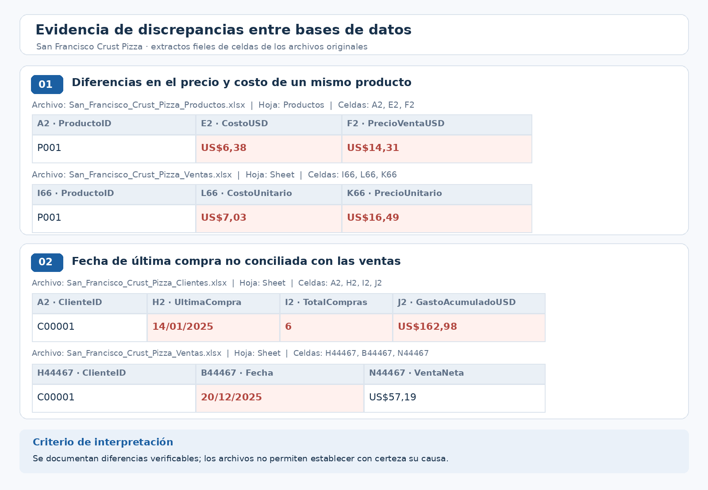

Resumen ejecutivo
Desempeño comercial, rentabilidad y evolución del negocio.
Evolución de ventas y utilidad
Desempeño por sucursal
Comparación anual
Participación por segmento
Señales comerciales detectadas
Reglas transparentes sobre datos filtradosVentas por ciudad
Rentabilidad de sucursales
Comparativo entre sucursales
Productos líderes
Rentabilidad por categoría
Detalle de portafolio
Segmentos de clientes
Canales de venta
Comparación por segmento
Asistente de dirección comercial
Seleccione una consulta
El análisis utilizará las métricas obtenidas de los registros filtrados. No atribuirá causas que los datos no permitan demostrar.
¿Cómo se utiliza ChatGPT?
Sin clave API ni configuración técnica en la aplicación.
1. Seleccione filtros y una pregunta comercial.
2. Pulse «Preparar consulta y abrir ChatGPT». Se enviará un resumen agregado de ventas, utilidad, márgenes y rankings, sin nombres de clientes.
3. Si la pregunta no aparece automáticamente, pegue el texto que se ha copiado al portapapeles.
ChatGPT puede solicitar inicio de sesión. Las condiciones de uso corresponden a ChatGPT, no a este dashboard. No se envían datos hasta que usted pulse el botón.
Validación humana
Las recomendaciones de IA deben contrastarse con los indicadores y la viabilidad comercial antes de aplicarse.
Origen y estado de los datos
Actualizar archivos
Se verifican columnas y referencias antes de reemplazar los registros activos.
La carga reemplaza las ventas únicamente en la sesión de este navegador. Puede restaurar el archivo original en cualquier momento; los visitantes de la versión pública seguirán viendo la base inicial.
Evidencia de las discrepancias detectadas

Reglas de interpretación
Ventas = Σ VentaNeta; utilidad = Σ UtilidadBruta; margen = utilidad / ventas. Los costos proceden de las operaciones.
Clientes = identificadores únicos presentes en Ventas; su segmento procede del maestro Clientes. Ticket = ventas / transacciones.
Los filtros se aplican conjuntamente. El comparativo interanual solo se calcula con ambos años y el periodo comparable disponible.